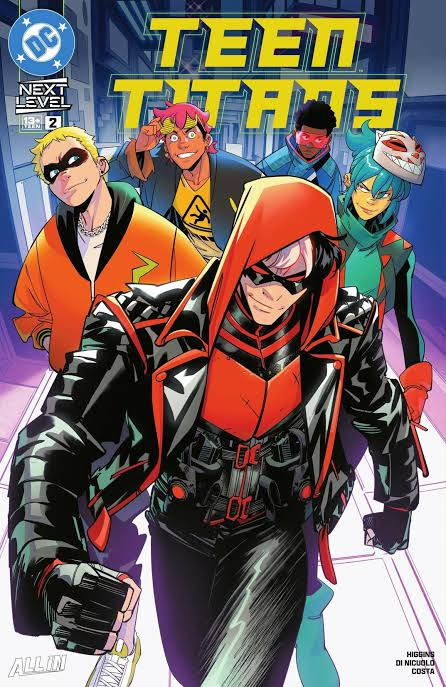

Teen Titans (2026-) #2
Kyle Higgins e Daniele Di Nicuolo
Após recusarem uma oferta do Asa Noturna, a nova geração dos Jovens Titãs escolheu o Capuz Vermelho como seu mentor!
Mas será que o outrora jovem prodígio — agora atormentado — tem o que é preciso para controlar esses heróis impulsivos de amanhã? O tempo urge para salvar o amigo desaparecido, enquanto o grupo deixa as salas de bate-papo e vai para as ruas de Seattle realizar sua primeira vigilância e tentar se infiltrar na Ascend.
★★★★★
Ler agora